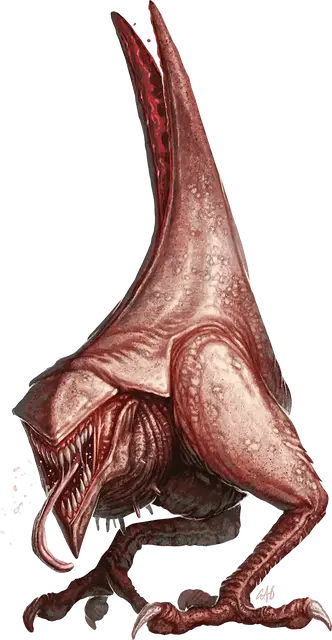

Курица Бездны
Abyssal Chicken
Маленькое Исчадие, хаотично-злое

Класс Доспеха 13 (природный доспех)
Хиты 10 (3к4 + 3)
Скорость 30 футов, летая 30 футов (смотри Плохо летает ниже)
| мод | спас | ||
|---|---|---|---|
| СИЛ | 6 | −2 | −2 |
| ЛОВ | 14 | +2 | +2 |
| ТЕЛ | 13 | +1 | +1 |
| мод | спас | ||
|---|---|---|---|
| ИНТ | 4 | −3 | −3 |
| МДР | 9 | −1 | −1 |
| ХАР | 5 | −3 | −3 |
Сопротивление урону огонь, холод, электричество
Иммунитет к урону яд
Иммунитет к состояниям ослепление, отравление
Чувства слепое зрение 30 футов (слеп за пределами этого радиуса), пассивное Восприятие 9
Языки Понимает язык Бездны, но не говорит
Опасность 1/4 (50 опыта)
Бонус мастерства +2
Особенности
Плохо летает. Курица Бездны падает в конце своего хода, если оканчивает его в состоянии полёта.
Действия
Мультиатака. Курица Бездны совершает две атаки: одну укусом, и другую когтями.
Укус. Рукопашная атака оружием. +4 к попаданию, досягаемость 5 футов, одно существо. Попадание: 4 (1к4+2) колющего урона.
Когти. Рукопашная атака оружием. +4 к попаданию, досягаемость 5 футов, одно существо. Попадание: 6 (1к6+2) рубящего урона.
Описание
Курицы Бездны — плотоядные, темпераментные, вкусные падальщики, обитающие в Бездне. Они сражаются своими кожистыми крыльями, чтобы пугать хищников и помогать себе бежать быстрее, а на вкус они как жирная курица.
С разрешения Мастера персонаж, который накладывает заклинание поиск фамильяра [find familiar], может использовать курицу Бездны вместо ворона [raven].